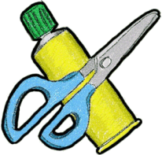

.png)
¿Qué son las manualidades? 📚
Las manualidades son actividades que consisten en fabricar de manera artesanal elementos que pueden ser utilizados en la casa.
Estos elementos pueden tener algún carácter funcional o ser meramente decorativos generalmente se denomina así a aquellas labores en las que se busca una realización personal, una creatividad casera, o en la mayoría de los casos una forma de desconectar del trabajo o bien como entretenimiento para combatir el aburrimiento y en otros casos también como un negocio.
¿Para que sirven las manualidades? ✨
Las manualidades tienen mucha utilidad, no solo laboral, también personal. Trabajar en manualidades nos permiten desarrollar un mayor grado de concentración y es ideal para disminuir el estrés.
Está comprobado que, las tareas manuales, son ideales para subir el autoestima y alejar los momentos de depresión y ansiedad al conseguir satisfacción personal por completar proyectos. En donde también contribuyen con el medio ambiente al estar relacionado con el reciclaje. Muchos trabajos utilizan materiales de segundo uso, como frascos de vidrios, botellas, pedazos de maderas, entre otros, que pasan a tener un reuso.